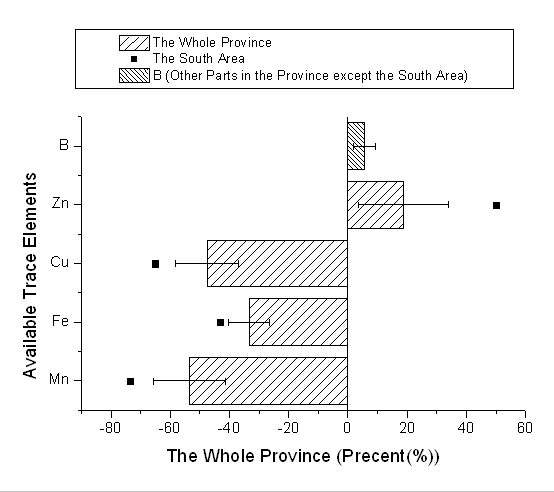
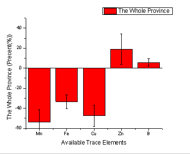
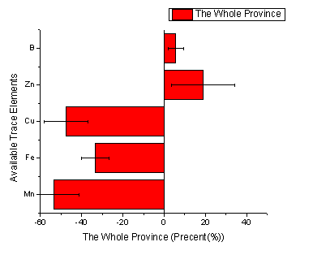
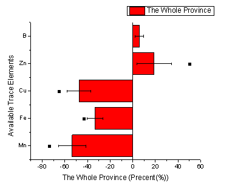
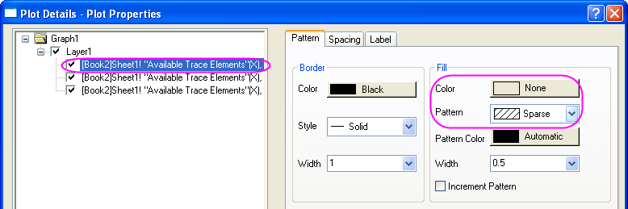
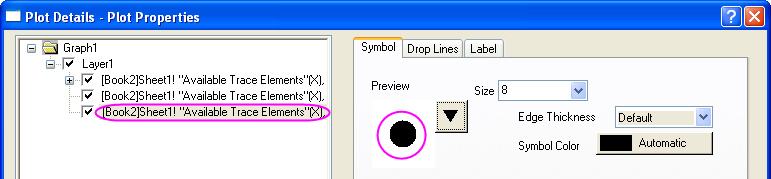
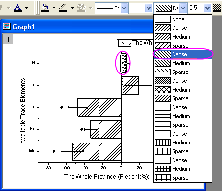

Balken- und Punktdiagramm mit Fehlerbalken
Bar-Scatter-ErrBar
Zusammenfassung
Die untenstehende Grafik besteht aus einem Balken- und einem Punktdiagramm.
-
- 
Origin-Version mind. erforderlich: Origin 8.0 SR0
Was Sie lernen werden
- Punktdiagramm zu einem Balkendiagramm hinzufügen
- Plus- und Minusfehlerbalken festlegen
Schritte
Dieses Tutorial basiert auf dem Projekt Tutorial Data: <Origin-Verzeichnis>\Samples\Tutorial Data.opj.
- Öffnen Sie das Projekt Tutorial Data und navigieren Sie zu dem Ordner Bar Plot with Errors im Projekt Explorer.
- Aktivieren Sie die Arbeitsmappe Book2N, klicken Sie mit der rechten Maustaste auf Spalte C und wählen Sie Setzen als: Y Fehlerbalken im Kontextmenü aus.
- Markieren Sie die Spalten A, B und C und wählen Sie im Hauptmenü Zeichnen: Einfache 2D: Säulendiagramm, um ein Säulendiagramm mit Y-Fehlerbalken zu zeichnen.
- 
- Aktivieren Sie das Diagrammfenster und wählen Sie dann Grafik: X-Y Achsen vertauschen.
- 
- Markieren Sie Spalte D im Arbeitsblatt und aktivieren Sie danach erneut das Diagrammfenster. Wählen Sie im Hauptmenü Einfügen: Zeichnung in Layer: Punktdiagramm, um Spalte D als Punktdiagramm zum
- 
- Klicken Sie zum Öffnen des Dialogs Details Zeichnung doppelt auf das Diagramm. Setzen Sie die Optionen Farbe (Color) und Muster in der Gruppe Füllung der Registerkarte Muster wie unten.
- 
- Wählen Sie das Punktdiagramm im linken Bedienfeld und setzen Sie dann das Symbol wie unten. Klicken Sie auf die Schaltfläche OK, um den Dialog zu schließen.
- 
- Aktivieren Sie das Diagrammfenster, halten Sie die Strg-Taste gedrückt und wählen Sie den ersten Balken, um sein Muster als Dicht festzulegen, wie unten in der Symbolleiste Stil.
- 
- Wählen Sie im Hauptmenü Grafik: Legende: Legende rekonstruieren, um die Legende für das Diagramm zu aktualisieren.
- Klicken Sie mit der rechten Maustaste auf die Legende und wählen Sie Einstellungen im Kontextmenü, um den Dialog Objekteigenschaften zu öffnen. Wählen Sie Schwarze Linie in der Auswahlliste Hintergrund. Bearbeiten und verschieben Sie danach die Legende wie unten.